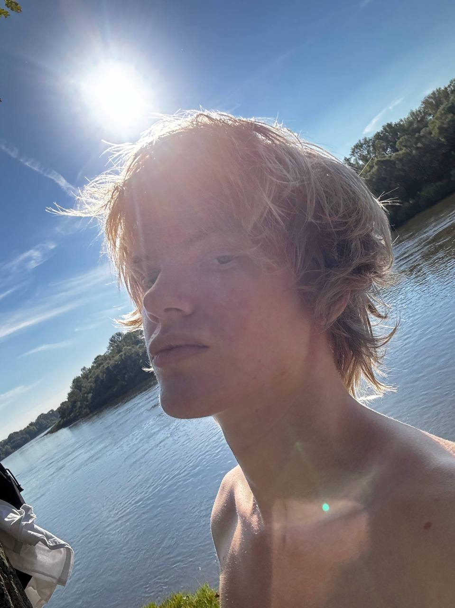
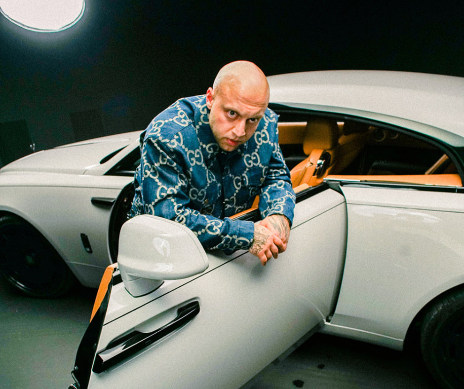
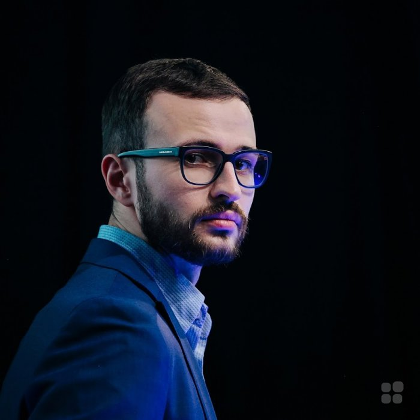
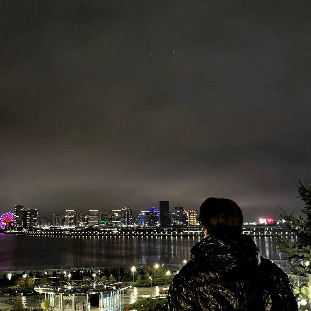
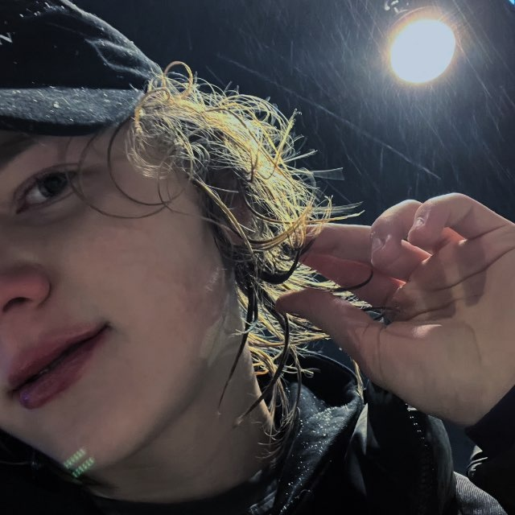
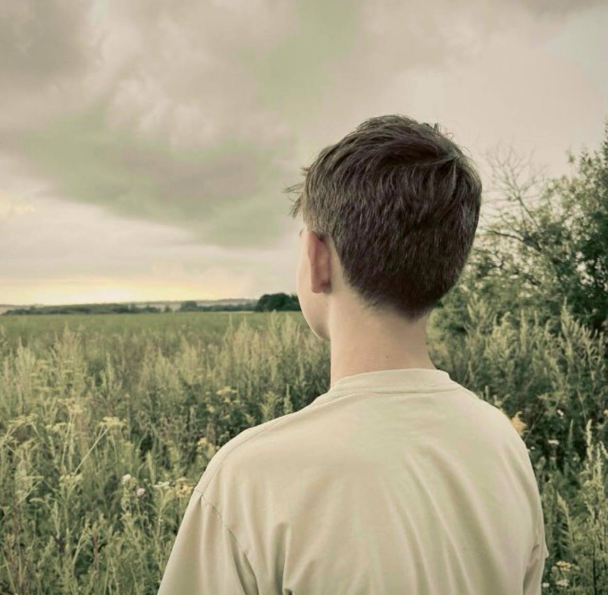
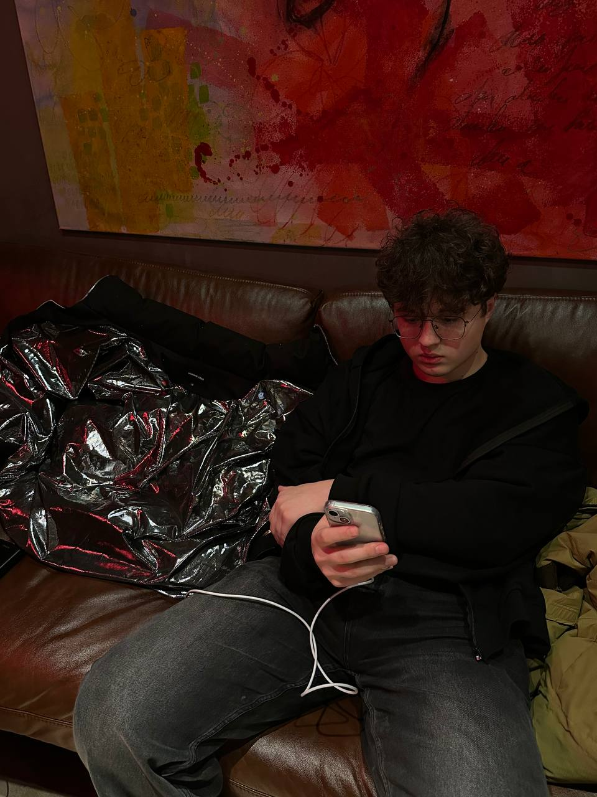

Из навыков — в деньги, связи и медийность
Матвей Волков — личный продюсер и наставник. Помогаю молодым ребятам быстрее выходить на высокий доход, сильное окружение и новый уровень жизни.
0
Сделано за весну в 13 лет на монтаже и медийной работе
0
Человек прошли через наставничество, разборы и работу
0
Просмотров привлечено крупным блогерам

Биография
 5 класс · 11 лет
5 класс · 11 лет
Начал перепродавать жвачки и сухарики, делал обложки, админил Telegram паблики — почти всё проваливалось, но именно тогда появилось понимание, что хочу выйти на другой уровень жизни.
 май 2024
май 2024
Ушёл в рассылки, первые деньги, первые связи, монтаж, контент, работа с Telegram каналами. Потом — первые клиенты и резкий рост через окружение.
 сейчас
сейчас
Работа с крупными блогерами, 100–150к+/месяц стабильно, собственное агентство Persona Agency и личное наставничество для молодых ребят.
Не мотивация —
Система
Чёткое понимание, куда двигаться, как искать клиентов, как расти и как выйти на новый уровень быстрее.
Окружение
Связи, контакты, медийность и люди, которые уже растут и двигаются вперёд.
Практика
Разборы, обратная связь, помощь с клиентами, контентом и развитием в разных нишах.
Ты узнаешь себя
Есть навыки, но нет денег
Уже обладаешь навыком, но клиентов мало, роста нет и непонятно, как уйти выше.
Нет окружения
Вокруг никто не развивается, из-за этого сложно держать темп, мышление и дисциплину.Большинство каждый день находятся среди тех, кто тянет их назад.
Хочешь масштабироваться
Через реальные действия, опыт, связи, медийность и сильное окружение.
Люди, с которыми работал

Гоша Миллер
Работа с контентом, монтажом и медийной подачей. 10M+ просмотров привлечено.

Артём Бриус
Монтаж, контент и развитие личного бренда через сильную подачу. 2M+ просмотров.

Михаил Гребенюк
Работа с высокими стандартами и контентом крупного уровня. 1M+ просмотров.
Простой процесс
01
Ты пишешь лично в Telegram и рассказываешь свою ситуацию, навыки и цели.
02
Матвей смотрит, сможет ли реально ускорить твой рост и помочь выйти выше.
03
Дальше — личная работа, стратегия, окружение, связи, контент, клиенты и развитие.
Главные результаты учеников

Тимур Юмагулов
Точка А:
10–20к дохода,
простой монтаж,
отсутствие медийности.
Через 2 месяца:
100к+/месяц,
high-level клиенты,
сильная медийность
и сарафанка.

Иван Шайхилов
Точка А:
Доход <10к,
непонимание,
куда двигаться.
Через 3 недели:
50–70к+ дохода,
работа
с медийными клиентами
и резкий рост.

Артём Орлов, 12 лет
Точка А:
Застрял в одном доходе, страх больших заказов и плохая репутация.
Через 2 месяца:
Первые 50к, затем 80к+ в 13 лет.

Илья Кокорев, 16 лет
Точка А:
Постоянные нервные срывы, эмоциональная нестабильность, доход — 0 рублей.
Через 2 месяца:
110к+ на заказах, стабильное состояние, уверенность и сильное окружение.
Через год ты всё равно пожалеешь)
Большинство людей годами остаются в одной точке — не потому что слабые, а потому что растут в одиночку. Ты можешь дальше сидеть на месте, или принять решение и сэкономить года жизни